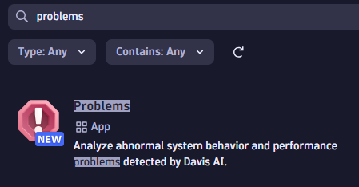
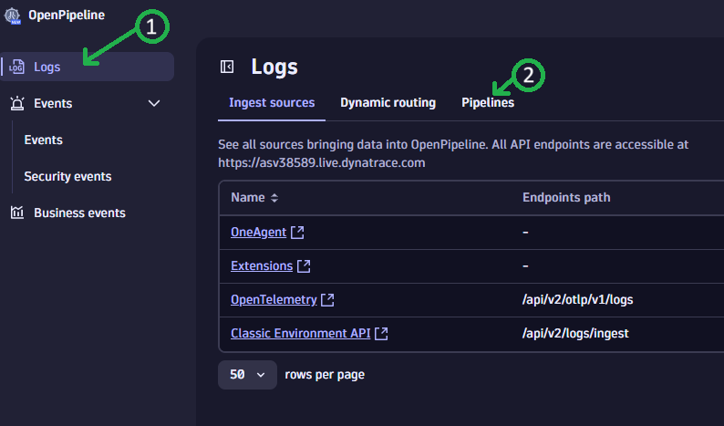
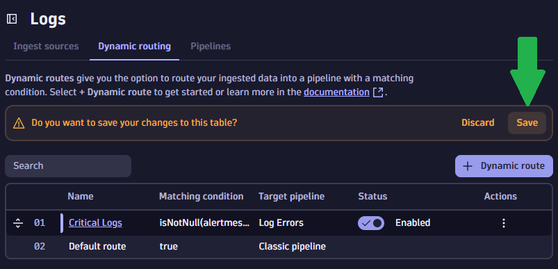
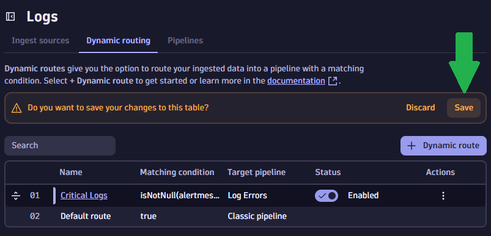

Getting Started#
Dynatrace Environment#
You must have access to a Dynatrace SaaS environment.Sign up here
Save the Dynatrace environment URL:
- Without the trailing slash
- Without
.apps.in the URL
The generic format is:
https://<EnvironmentID>.<Environment>.<URL>
For example:
https://abc12345.live.dynatrace.com
Custom Runbook#
Info
As the developer responsible for the cartservice, if problems occur, you're the best person to know how to resolve the issue.
To help your colleagues, you have prebuilt a notebook which will be useful as a runbook if / when problems occur.
You want to make this notebook automatically available whenever problems with the cartservice occur.
Download the file Redis Troubleshooting.json and save to your computer.
In Dynatrace:
- Press
ctrl + k. Search fornotebooks - Open the app and find the
Uploadbutton at the top of the page - Upload the JSON file you previously downloaded

- Make a note of the notebook ID from the URL bar
Warning
Your environment and notebook IDs will be different.

Install New Problems App#
In Dynatrace:
- Press
ctrl + k. Search forHub. - Open the
Problemsapp and clickInstall

Create OpenPipeline#
Define New Log Pipeline#
In Dynatrace:
- Press
ctrl + k. Search forOpenPipeline. Open the app - Ensure
Logsis selected and select thePipelinestab

- Click
+ Pipelineto create a new log ingest pipeline. - Click the pencil icon and rename the pipeline to
Log Errors - Change to the
Data extractiontab and add a newDavis eventprocessor


- Provide any name you like
- Set the
Matching conditiontotrue(this means any log line flowing through the pipeline will alert) - Set the
Event nameto:
[{priority}][{deployment.release_stage}][{deployment.release_product}][{dt.owner}] {alertmessage}
- Set the
Event descriptionto:
{supportInfo} - Log line: {content}
- Set the
event.typeproperty to:
ERROR_EVENT
-
Add 5 new properties:
dt.ownerwith value:{dt.owner}dt.cost.costcenterwith value:{dt.cost.costcenter}dt.cost.productwith value:{dt.cost.product}deployment.release_productwith value:{deployment.release_product}deployment.release_stagewith value:{deployment.release_stage}
Save it!
Don't forget to click Save to save the pipeline


Create Pipeline Routing Rule#
Create a dynamic routing rule to tell Dynatrace to redirect only certain logs through the Logs Errors pipeline.
- Switch to the
Dynamic routingtab - Click
+ Dynamic route - Name the route whatever you like
- Set the
Matching conditionto:
isNotNull(alertmessage) and
isNotNull(priority) and
priority == "1"
- Click
Add
Save it!
Don't forget to click Save to save the dynamic route
 

Success
The pipeline is configured.
Logs flowing into Dynatrace with an alertmessage field and a priority of "1" will be processed
via your custom pipeline.
Those log lines will raise a custom problem in Dynatrace where the problem title is:
[{priority}][{deployment.release_stage}][{deployment.release_product}][{dt.owner}] {alertmessage}
Explain the Configuration#
The above needs some explanation because there's a lot of "magic" happening.
This will be explained after the demo is started; while you wait for things to initialise.
Create API Token#
In Dynatrace:
- Press
ctrl + k. Search foraccess tokens. - Create a new access token with the following permissions:
logs.ingestmetrics.ingestopenTelemetryTrace.ingestevents.ingest
API Token Permissions Explained#
logs.ingest,metrics.ingestandopenTelemetryTrace.ingestare required to send the relevant telemetry data into Dynatraceevents.ingestis required to send theCUSTOM_CONFIGURATIONevent into Dynatrace
Start Demo#
Enter Required Information
During the next step you will be prompted for some details.
Enter the relevant details in the GitHub form.
You've done the hard work! It is time to spin up the demo environment.
Click this button to open the demo environment. This will open in a new tab.

- Fill in the form with the details you've already gathered.
- Click
Create codespace - Proceed to the next documentation step with the link below.